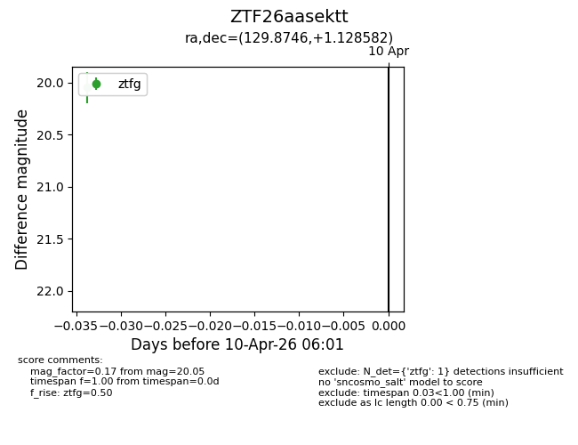
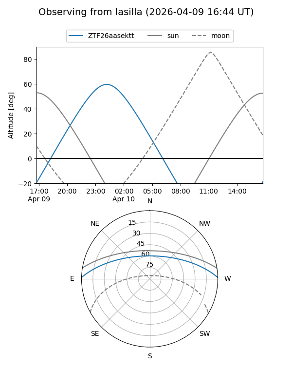
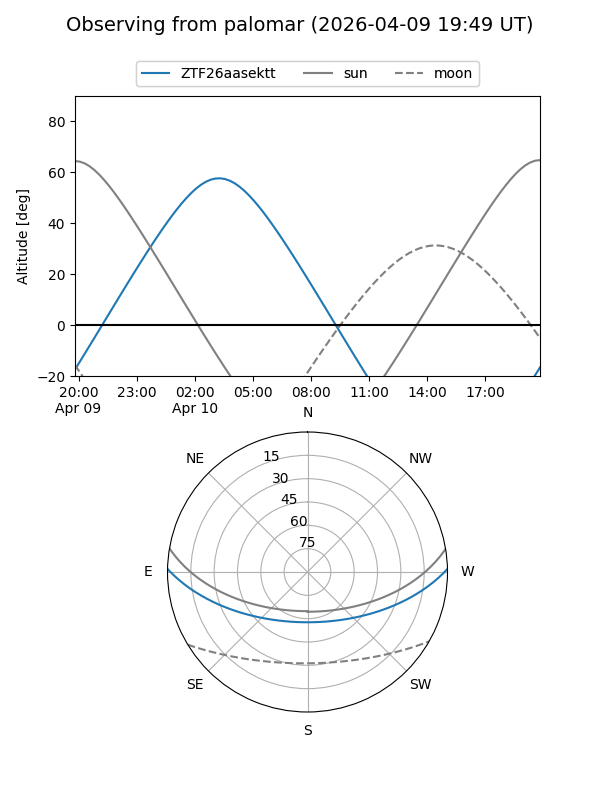

ZTF26aasektt
Target ZTF26aasektt at 2026-04-10 06:11
Aliases and brokers:
FINK: link
Lasair: link
ALeRCE: link
alt names
ZTF26aasektt (ztf,fink_ztf)
Coordinates:
equatorial (ra, dec) = 129.8746,+1.12858
equatorial (HMS+DMS) = 08:39:29.91,+01:07:42.90
galactic (l, b) = (224.9457,+24.40342)
Flags:
Photometry:
last ztfg=20.05
1 ztfg detections
Lightcurve

Visibility


Additional plots